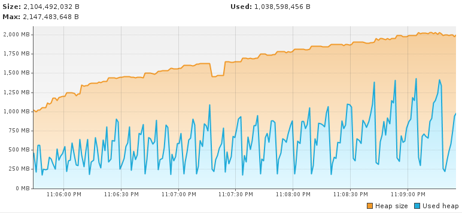
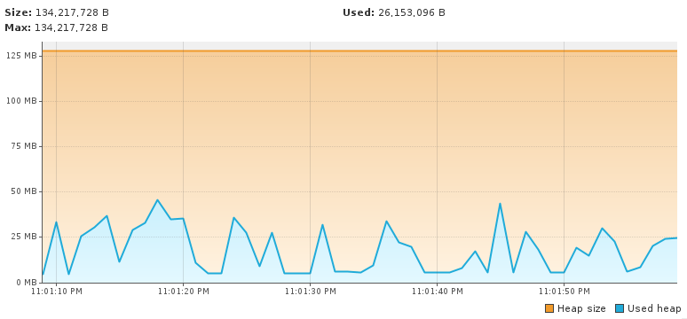
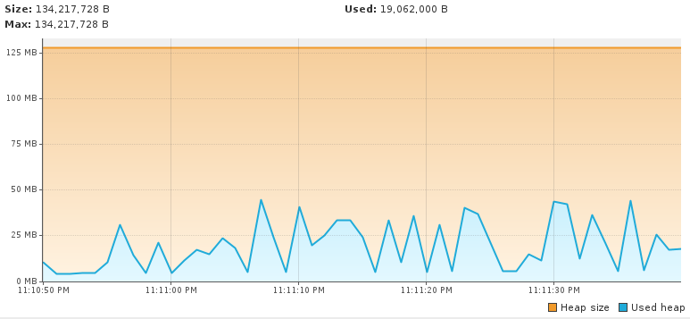

Introduction
Sqlg is a implementation of TinkerPop3 on a RDBMS. Currently HSQLDB and Postgresql are supported.
Sqlg has a Google Group.
TinkerPop supported features
Sqlg version 1.2.0 runs on TinkerPop 3.2.0-incubating
Sqlg passes TinkerPop's StructureStandardSuite and ProcessStandardSuite test suites.
Graph Features not implemented.
- Computer
- ThreadedTransactions
- Variables
Vertex Features not implemented.
- MultiProperties
- MetaProperties
- UserSuppliedIds
- NumericIds
- StringIds
- UuidIds
- CustomIds
- AnyIds
Edge Features not implemented.
- UserSuppliedIds
- NumericIds
- StringIds
- UuidIds
- CustomIds
- AnyIds
Vertex property features not implemented.
- AddProperty
- RemoveProperty
- UserSuppliedIds
- NumericIds
- StringIds
- UuidIds
- CustomIds
- AnyIds
- MapValues
- MixedListValues
- SerializableValues
- UniformListValues
Edge property feature not implemented.
- MapValues
- MixedListValues
- SerializableValues
- UniformListValues
Getting Started
Maven
Maven coordinates,
HSQLDB
<dependency>
<groupId>org.umlg</groupId>
<artifactId>sqlg-hsqldb</artifactId>
<version>1.2.0</version>
</dependency>
Postgresql
<dependency>
<groupId>org.umlg</groupId>
<artifactId>sqlg-postgres</artifactId>
<version>1.2.0</version>
</dependency>
Sqlg is designed to run as a singleton that can be shared among multiple threads. You can instantiate Sqlg using the standard tinkerpop3 static constructors.
SqlgGraph.open(final Configuration configuration)SqlgGraph.open(final String pathToSqlgProperties)
The configuration object requires the following properties.
HSQLDB
jdbc.url=jdbc:hsqldb:file:/tmp/sqlg
jdbc.username=SA
jdbc.password=
Postgresql
jdbc.url=jdbc:postgresql://localhost:5432/yourdb
jdbc.username=postgres
jdbc.password=******
In the case of Postgresql the database must already exist.
If you want to run the TinkerPop tests on Postgresql you need to create the various databases that are used. These are,
- g1
- g2
- readGraph
- standard
- temp
- temp1
- temp2
- subgraph
- prototype
- target
Gremlin Console
HSQLDB
[pieter@pieter-laptop bin]$ ./gremlin.sh
\,,,/
(o o)
-----oOOo-(3)-oOOo-----
plugin activated: tinkerpop.server
plugin activated: tinkerpop.utilities
plugin activated: tinkerpop.tinkergraph
gremlin> :install org.umlg sqlg-hsqldb 1.2.0-SNAPSHOT
log4j:WARN No appenders could be found for logger (org.apache.tinkerpop.gremlin.groovy.util.DependencyGrabber).
log4j:WARN Please initialize the log4j system properly.
log4j:WARN See http://logging.apache.org/log4j/1.2/faq.html#noconfig for more info.
==>Loaded: [org.umlg, sqlg-hsqldb, 1.2.0-SNAPSHOT]
gremlin> :plugin list
==>tinkerpop.server[active]
==>tinkerpop.gephi
==>tinkerpop.utilities[active]
==>tinkerpop.sugar
==>tinkerpop.credentials
==>tinkerpop.tinkergraph[active]
==>sqlg.hsqldb
gremlin> :plugin use sqlg.hsqldb
==>sqlg.hsqldb activated
gremlin> graph = SqlgGraph.open('pathTo/sqlg.properties')
==>sqlggraph[SqlGraph]
gremlin> g = graph.traversal()
==>sqlggraphtraversalsource[sqlggraph[SqlGraph] (jdbc:hsqldb:file:src/test/db/sqlgraphdb), standard]
gremlin> graph.io(graphml()).readGraph('pathTo/grateful-dead.xml')
==>null
gremlin> g.V().count()
==>808
gremlin>
Postgresql
[pieter@pieter-laptop bin]$ ./gremlin.sh
\,,,/
(o o)
-----oOOo-(3)-oOOo-----
plugin activated: tinkerpop.server
plugin activated: tinkerpop.utilities
plugin activated: tinkerpop.tinkergraph
gremlin> :install org.umlg sqlg-postgres 1.2.0-SNAPSHOT
log4j:WARN No appenders could be found for logger (org.apache.tinkerpop.gremlin.groovy.util.DependencyGrabber).
log4j:WARN Please initialize the log4j system properly.
log4j:WARN See http://logging.apache.org/log4j/1.2/faq.html#noconfig for more info.
==>Loaded: [org.umlg, sqlg-postgres, 1.2.0-SNAPSHOT]
gremlin> :plugin list
==>tinkerpop.server[active]
==>tinkerpop.gephi
==>tinkerpop.utilities[active]
==>tinkerpop.sugar
==>tinkerpop.credentials
==>tinkerpop.tinkergraph[active]
==>sqlg.postgres
gremlin> :plugin use sqlg.postgres
==>sqlg.postgres activated
gremlin> graph = SqlgGraph.open('pathTo/sqlg.properties')
==>sqlggraph[SqlGraph]
gremlin> g = graph.traversal()
==>sqlggraphtraversalsource[sqlggraph[SqlGraph] (jdbc:postgresql://localhost:5432/sqlgraphdb), standard]
gremlin> graph.io(graphml()).readGraph('pathTo/grateful-dead.xml')
==>null
gremlin> g.V().count()
==>808
gremlin>
Data types
| Java | HSQLDB | Postgresql | Boolean | BOOLEAN | BOOLEAN |
|---|---|---|
| Byte | TINYINT | Not supported |
| Short | SMALLINT | SMALLINT |
| Integer | INTEGER | INTEGER |
| Long | BIGINT | BIGINT |
| Float | Not supported | REAL |
| Double | DOUBLE | DOUBLE PRECISION |
| String | LONGVARCHAR | TEXT |
| Boolean[] | BOOLEAN ARRAY DEFAULT ARRAY[] | BOOLEAN[] |
| Byte[] | LONGVARBINARY | BYTEA |
| Short[] | SMALLINT ARRAY DEFAULT ARRAY[] | SMALLINT[] |
| Integer[] | INTEGER ARRAY DEFAULT ARRAY[] | INTEGER[] |
| Long[] | BIGINT ARRAY DEFAULT ARRAY[] | BIGINT[] |
| Float[] | Not supported | REAL[] |
| Double[] | DOUBLE ARRAY DEFAULT ARRAY[] | DOUBLE PRECISION[] |
| String[] | LONGVARCHAR ARRAY DEFAULT ARRAY[] | TEXT[] |
| java.time.LocalDateTime | TIMESTAMP WITH TIME ZONE | TIMESTAMP WITH TIME ZONE |
| java.time.LocalDate | DATE | DATE |
| java.time.LocalTime | TIME WITH TIME ZONE | TIME WITH TIME ZONE |
| java.time.ZonedDateTime | TIMESTAMP WITH TIME ZONE LONGVARCHAR |
TIMESTAMP WITH TIME ZONE TEXT |
| java.time.Period | INTEGER INTEGER INTEGER |
INTEGER INTEGER INTEGER |
| java.time.Duration | BIGINT INTEGER |
BIGINT INTEGER |
| java.time.LocalDateTime[] | TIMESTAMP WITH TIME ZONE ARRAY DEFAULT ARRAY[] | TIMESTAMP WITH TIME ZONE[] |
| java.time.LocalDate[] | DATE ARRAY DEFAULT ARRAY[] | DATE[] |
| java.time.LocalTime[] | TIME WITH TIME ZONE ARRAY DEFAULT ARRAY[] | TIME WITH TIME ZONE[] |
| java.time.ZonedDateTime[] | TIMESTAMP WITH TIME ZONE ARRAY DEFAULT ARRAY[] LONGVARCHAR ARRAY DEFAULT ARRAY[] |
TIMESTAMP WITH TIME ZONE[] TEXT[] |
| java.time.Period[] | INTEGER ARRAY DEFAULT ARRAY[] INTEGER ARRAY DEFAULT ARRAY[] INTEGER ARRAY DEFAULT ARRAY[] |
INTEGER[] INTEGER[] INTEGER[] |
| java.time.Duration[] | BIGINT ARRAY DEFAULT ARRAY[] INTEGER ARRAY DEFAULT ARRAY[] |
BIGINT[] INTEGER[] |
| com.fasterxml.jackson.databind.JsonNode | Not supported | JSONB |
| com.fasterxml.jackson.databind.JsonNode[] | Not supported | JSONB[] |
| org.postgis.Point | Not supported | geometry(POINT) |
| org.umlg.sqlg.gis.GeographyPoint | Not supported | geography(POINT, 4326) |
| org.postgis.LineString | Not supported | geometry(LINESTRING) |
| org.postgis.Polygon | Not supported | geometry(POLYGON) |
| org.umlg.sqlg.gis.GeographyPolygon | Not supported | geography(POLYGON, 4326) |
NOTE java.time.LocalTime drops the nano second precision.
Architecture
With the coming of vertex labels to TinkerPop the mapping of TinkerPop's graph semantics to that of a RDBMS became natural and useful.
Vertex tables
Every unique vertex label maps to a table. Vertex tables are prefixed with a V_. i.e. V_Person. The vertex table
stores the vertex's properties.
Edge tables
Every unique edge label maps to a table. Edge tables are prefixed with a E_. i.e. E_friend. The edge table stores
each edge's adjacent vertex ids and the edge properties. The column corresponding to each adjacent vertex id (IN and OUT)
has a foreign key to the adjacent vertex's table.
From a rdbms' perspective each edge table is the classic many to many join table between vertices.
TinkerPop-modern
Taken from TinkerPop

ER Diagram

V_person

V_software

E_knows

E_created

Namespacing and Schemas
Many RDBMS databases have the notion of a schema as a namespace for tables. Sqlg supports schemas
for vertex labels. Distinct schemas for edge tables are unnecessary as edge tables are created in the schema of the adjacent out vertex.
By default schemas for vertex tables go into the underlying databases' default schema. For Postgresql and hsqldb this
is the public schema.
To specify the schema for a label Sqlg uses the dot . notation.
Vertex john = this.sqlgGraph.addVertex(T.label, "manager", "name", "john");
Vertex palace1 = this.sqlgGraph.addVertex(T.label, "continent.house", "name", "palace1");
Vertex corrola = this.sqlgGraph.addVertex(T.label, "fleet.car", "model", "corrola");
palace1.addEdge("managedBy", john);
corrola.addEdge("owner", john);
This will create a table V_manager in the public (default) schema. Table V_house is in a continent schema and table V_car
is in a fleet schema. For the edges a E_managedBy table is created in the continent schema and a E_owner table in the fleet schema.
Schemas


Indexes
Sqlg supports basic indexing.
org.umlg.sqlg.structure.SqlgGraph has two methods on it to create indexes one for vertices and one for edges.
SqlgGraph.createVertexLabeledIndex(String label, Object... dummykeyValues)SqlgGraph.createEdgeLabeledIndex(String label, Object... dummykeyValues)
The dummykeyValues are required to indicate to Sqlg the name and type of the property. The type is needed when
the column does not yet exist and Sqlg needs to create it.
Outside of creating the index Sqlg has no further direct interaction with the index. However gremlin queries with a
has step will translate to a sql where clause. If an index has been created on the property of the has step then
the underlying rdbms will utilize that index on that property's column.
The index does not need to be created upfront. It can be added any time.
Example illustrating indexes
@Test
public void testIndexOnVertex() throws SQLException {
this.sqlgGraph.createVertexLabeledIndex("Person", "name", "dummy");
this.sqlgGraph.tx().commit();
for (int i = 0; i < 5000; i++) {
this.sqlgGraph.addVertex(T.label, "Person", "name", "john" + i);
}
this.sqlgGraph.tx().commit();
assertEquals(1, this.sqlgGraph.traversal().V().has(T.label, "Person").has("name", "john50").count().next(), 0);
//Check if the index is being used
Connection conn = this.sqlgGraph.tx().getConnection();
Statement statement = conn.createStatement();
ResultSet rs = statement.executeQuery("explain analyze SELECT * FROM \"public\".\"V_Person\" a WHERE a.\"name\" = 'john50'");
assertTrue(rs.next());
String result = rs.getString(1);
System.out.println(result);
assertTrue(result.contains("Index Scan") || result.contains("Bitmap Heap Scan"));
statement.close();
this.sqlgGraph.tx().rollback();
}
Output: "Bitmap Heap Scan on "V_Person" a (cost=4.42..32.42 rows=18 width=40) (actual time=0.016..0.016 rows=1 loops=1)"
Table definition (Postgresql)

In the above example, Sqlg created a table V_Person with column name and an index on the name column.
Currently Sqlg only supports the default index. For Postgresql this is a Btree index.
The output shows the result of a Postgresql query explain plan. The result shows that Postgresql does indeed utilize the index.
The gremlin query this.sqlgGraph.traversal().V().has(T.label, "Person").has("name1", "john50") will utilize the index on the name field.
Schema creation
Sqlg creates the schema lazily. This is great, but comes with serious caveats.
HSQLDB does not support transactional schema creation. HSQLDB automatically commits any schema creation/alter command and immediately starts a new transaction. This can have some rather unfortunate consequences, as HSQLDB will silently commit a user transaction thus invalidating the user's transaction boundaries and semantics.
Postgresql supports transactional schema creation/alter commands. The user's transaction semantics remain intact. However schema creation commands creates table level locks which increases the risk of deadlocks in a multi-threaded environment. Sqlg manages a global lock for schema creation to prevent Postgresql from dead locking. If multiple jvm(s) are used then a Hazelcast distributed lock is used.
Topology
As of version 1.2.0 Sqlg stores the graph's topology (schema, meta data) natively. The topology is itself stored in the graph. The topology is stored in the 'sqlg_schema' rdbms schema.

This is a uml diagram of TinkerPop's meta model.
The topology is itself being stored in the graph allows it to be queried using Gremlin.
To query the topology the TopologyStrategy is used. To facilitate ease of use, SqlgGraph.topology() method is added to enable the strategy.
Being able to query the topology is very helpful to understand a graph's structure.
Example illustrating querying the topology
[pieter@pieter-laptop bin]$ ./gremlin.sh
\,,,/
(o o)
-----oOOo-(3)-oOOo-----
plugin activated: tinkerpop.server
plugin activated: tinkerpop.utilities
plugin activated: sqlg.hsqldb
plugin activated: sqlg.postgres
plugin activated: tinkerpop.tinkergraph
gremlin> :plugin use sqlg.postgres
==>sqlg.postgres activated
gremlin> graph = SqlgGraph.open('pathTo/sqlg.properties')
log4j:WARN No appenders could be found for logger (org.apache.commons.configuration.PropertiesConfiguration).
log4j:WARN Please initialize the log4j system properly.
log4j:WARN See http://logging.apache.org/log4j/1.2/faq.html#noconfig for more info.
==>sqlggraph[SqlGraph] (jdbc:postgresql://localhost:5432/sqlgraphdb)
gremlin> graph.io(graphml()).readGraph('pathTo/tinkerpop-modern.xml')
==>null
gremlin> t = graph.topology()
==>sqlggraphtraversalsource[sqlggraph[SqlGraph] (jdbc:postgresql://localhost:5432/sqlgraphdb), standard]
gremlin> t.V().hasLabel("sqlg_schema.schema").values("name")
==>public
gremlin> t.V().hasLabel("sqlg_schema.vertex").values("name")
==>person
==>software
gremlin> t.V().hasLabel("sqlg_schema.vertex").has("name", "person").out("vertex_property").values("name")
==>name
==>age
gremlin> t.V().hasLabel("sqlg_schema.vertex").has("name", "person").out("out_edges").values("name")
==>knows
==>created
gremlin> t.V().hasLabel("sqlg_schema.vertex").has("name", "person").out("in_edges").values("name")
==>knows
gremlin> t.V().hasLabel("sqlg_schema.vertex").has("name", "software").out("in_edges").values("name")
==>created
gremlin> t.V().hasLabel("sqlg_schema.vertex").has("name", "person").out("out_edges").out("edge_property").values("name")
==>weight
==>weight
gremlin> t.V().hasLabel("sqlg_schema.vertex").has("name", "software").out("vertex_property").values("name","type")
==>name
==>STRING
==>lang
==>STRING
NOTE
Sqlg will automatically upgrade versions prior to 1.2.0. It does so by reading the information_schema tables and populating the sqlg_schema.
Multiple Jvm
It is possible to run many Sqlg instances pointing to the same underlying database. These instances can be in the same jvm but is primarily intended for separate jvm(s) pointing to the same underlying database.
Sqlg caches database schema information. When multiple Sqlg instances point to the same database, Sqlg uses Hazelcast as a distributed cache of the schema information.
To indicate to Sqlg that a Hazelcast cluster is required you must specify hazelcast.members=ipaddres1,ipaddres2,ipaddres3
in the constructors configuration object. Hazelcast will then automatically set up the distributed cluster for the schema
information.
Example Postgresql
Jvm 1
jdbc.url=jdbc:postgresql://localhost:5432/yourdb
jdbc.username=postgres
jdbc.password=******
hazelcast.members=127.0.0.1,127.0.0.2
Jvm 2
jdbc.url=jdbc:postgresql://localhost:5432/yourdb
jdbc.username=postgres
jdbc.password=******
hazelcast.members=127.0.0.1,127.0.0.2
Gremlin
Sqlg has full support for gremlin. However gremlin's fine grained 'graphy' nature results in very high latency. To overcome the high latency Sqlg optimizes gremlin by reducing the number of calls to the rdbms.
Sqlg optimizes gremlin by analyzing the steps and where possible combining them into a single SqlgGraphStepCompiled or SqlgVertexStepCompiled.
NOTE This is an ongoing task as gremlin is a large language.
Consecutive GraphStep, VertexStep, EdgeVertexStep, EdgeOtherVertexStep, HasStep, RepeatStep and OrderGlobalStep are currently combined. The combined step will then in turn generate the sql statements to retrieve the data. It attempts to retrieve the data in as few distinct sql statements as possible.
NOTE: Turn sql logging on by setting log4j.logger.org.umlg.sqlg=debug
Example illustrating high latency
@Test
public void showHighLatency() {
Vertex easternUnion = this.sqlgGraph.addVertex(T.label, "Organization", "name", "EasternUnion");
Vertex legal = this.sqlgGraph.addVertex(T.label, "Division", "name", "Legal");
Vertex dispatch = this.sqlgGraph.addVertex(T.label, "Division", "name", "Dispatch");
Vertex newYork = this.sqlgGraph.addVertex(T.label, "Office", "name", "NewYork");
Vertex singapore = this.sqlgGraph.addVertex(T.label, "Office", "name", "Singapore");
easternUnion.addEdge("organization_division", legal);
easternUnion.addEdge("organization_division", dispatch);
legal.addEdge("division_office", newYork);
dispatch.addEdge("division_office", singapore);
this.sqlgGraph.tx().commit();
GraphTraversal<Vertex, Vertex> traversal = this.sqlgGraph.traversal().V()
.hasLabel("Organization")
.out()
.out();
System.out.println(traversal);
traversal.hasNext();
System.out.println(traversal);
List<Vertex> offices = traversal.toList();
assertEquals(2, offices.size());
}
Before optimization:
[GraphStep([],vertex), HasStep([~label.eq(Organization)]), VertexStep(OUT,vertex), VertexStep(OUT,vertex)]
After optimization:
[SqlgGraphStepCompiled([],vertex)]
Without optimization the query this.sqlgGraph.traversal().V().hasLabel("Organization").out().out() will result
in a number of database hits. First to get the organizations, then for each organization the divisions and then for each division the offices.
For an embedded db like HSQLDB this is still ok but for a database server like postgresql the performance impact is significant.
In the above example the GraphStep, HasStep and 2 VertexSteps are all combined into one step, SqlgGraphStepCompiled.
The before optimization output shows the steps that would have executed with if no optimization is performed. As the query only contains sequential optimizable steps they are all combined into one step.
The above example will retrieve the data in one sql query.
SELECT
"public"."V_Office"."ID" AS "alias1",
"public"."V_Office"."name" AS "alias2"
FROM
"public"."V_Organization" INNER JOIN
"public"."E_organization_division" ON "public"."V_Organization"."ID" = "public"."E_organization_division"."public.Organization__O" INNER JOIN
"public"."V_Division" ON "public"."E_organization_division"."public.Division__I" = "public"."V_Division"."ID" INNER JOIN
"public"."E_division_office" ON "public"."V_Division"."ID" = "public"."E_division_office"."public.Division__O" INNER JOIN
"public"."V_Office" ON "public"."E_division_office"."public.Office__I" = "public"."V_Office"."ID"
Predicates
TinkerPop's Compare and Contains predicates are optimized to execute on the database.
Compare predicate
@Test
public void showComparePredicate() {
Vertex easternUnion = this.sqlgGraph.addVertex(T.label, "Organization", "name", "EasternUnion");
Vertex legal = this.sqlgGraph.addVertex(T.label, "Division", "name", "Legal");
Vertex dispatch = this.sqlgGraph.addVertex(T.label, "Division", "name", "Dispatch");
Vertex newYork = this.sqlgGraph.addVertex(T.label, "Office", "name", "NewYork");
Vertex singapore = this.sqlgGraph.addVertex(T.label, "Office", "name", "Singapore");
easternUnion.addEdge("organization_division", legal);
easternUnion.addEdge("organization_division", dispatch);
legal.addEdge("division_office", newYork);
dispatch.addEdge("division_office", singapore);
this.sqlgGraph.tx().commit();
GraphTraversal<Vertex, Vertex> traversal = this.sqlgGraph.traversal().V()
.hasLabel("Organization")
.out()
.out()
.has("name", P.eq("Singapore"));
System.out.println(traversal);
traversal.hasNext();
System.out.println(traversal);
List<Vertex> offices = traversal.toList();
assertEquals(1, offices.size());
assertEquals(singapore, offices.get(0));
}
And the resulting sql,
SELECT
"public"."V_Office"."ID" AS "alias1",
"public"."V_Office"."name" AS "alias2"
FROM
"public"."V_Organization" INNER JOIN
"public"."E_organization_division" ON "public"."V_Organization"."ID" = "public"."E_organization_division"."public.Organization__O" INNER JOIN
"public"."V_Division" ON "public"."E_organization_division"."public.Division__I" = "public"."V_Division"."ID" INNER JOIN
"public"."E_division_office" ON "public"."V_Division"."ID" = "public"."E_division_office"."public.Division__O" INNER JOIN
"public"."V_Office" ON "public"."E_division_office"."public.Office__I" = "public"."V_Office"."ID"
WHERE
( "public"."V_Office"."name" = ?)
The same pattern is used for all the Compare predicates.
Contains predicate
Sqlg's implementation of Contains is slightly more complex.
For HSQLDB a regular in clause is used.
For Postgresql, instead of using a sql in clause, i.e. where property in (?, ?...) the values are bulk inserted into a temporary table and then a join to the temporary table is used
to constrain the results.
@Test
public void showContainsPredicate() {
List<Integer> numbers = new ArrayList<>(10000);
for (int i = 0; i < 10000; i++) {
this.sqlgGraph.addVertex(T.label, "Person", "number", i);
numbers.add(i);
}
this.sqlgGraph.tx().commit();
List<Vertex> persons = this.sqlgGraph.traversal().V()
.hasLabel("Person")
.has("number", P.within(numbers))
.toList();
assertEquals(10000, persons.size());
}
And the resulting sql on Postgresql,
CREATE TEMPORARY TABLE "V_BULK_TEMP_EDGEzf++PItI"("ID" SERIAL PRIMARY KEY, "within" INTEGER) ON COMMIT DROP;
COPY "V_BULK_TEMP_EDGEzf++PItI" ("within") FROM stdin DELIMITER ' ';
SELECT
"public"."V_Person"."ID" AS "alias1",
"public"."V_Person"."number" AS "alias2"
FROM
"public"."V_Person"
INNER JOIN "V_BULK_TEMP_EDGEzf++PItI" tmp1 on"public"."V_Person"."number" = tmp1.within
This pattern makes P.within and p.without very fast even with millions of values being passed into the query.
Benchmarking shows that doing a join on a temporary table is always faster than using the in clause.
For the case of there being only one value Sqlg will use an equals instead of a temporay table or an in statement.
Text predicate
Sqlg includes its own Text predicate for full text queries.
- Text.contains (case sensitive string contains)
- Text.ncontains (case sensitive string does not contain)
- Text.containsCIS (case insensitive string contains)
- Text.ncontainsCIS (case insensitive string does not contain)
- Text.startsWith (case sensitive string starts with)
- Text.nstartsWith (case sensitive string does not start with)
- Text.endsWith (case sensitive string ends with)
- Text.nendsWith (case sensitive string does not end with)
@Test
public void showTextPredicate() {
Vertex john = this.sqlgGraph.addVertex(T.label, "Person", "name", "John XXX Doe");
Vertex peter = this.sqlgGraph.addVertex(T.label, "Person", "name", "Peter YYY Snow");
this.sqlgGraph.tx().commit();
List<Vertex> persons = this.sqlgGraph.traversal().V()
.hasLabel("Person")
.has("name", Text.contains("XXX")).toList();
assertEquals(1, persons.size());
assertEquals(john, persons.get(0));
}
And the resulting sql on Postgresql,
SELECT
"public"."V_Person"."ID" AS "alias1",
"public"."V_Person"."name" AS "alias2"
FROM
"public"."V_Person"
WHERE
( "public"."V_Person"."name" like ?)
DateTime queries
LocalDateTime, LocalDate and LocalTime queries are supported.
@Test
public void showSearchOnLocalDateTime() {
LocalDateTime born1 = LocalDateTime.of(1990, 1, 1, 1, 1, 1);
LocalDateTime born2 = LocalDateTime.of(1990, 1, 1, 1, 1, 2);
LocalDateTime born3 = LocalDateTime.of(1990, 1, 1, 1, 1, 3);
Vertex john = this.sqlgGraph.addVertex(T.label, "Person", "name", "John", "born", born1);
Vertex peter = this.sqlgGraph.addVertex(T.label, "Person", "name", "Peter", "born", born2);
Vertex paul = this.sqlgGraph.addVertex(T.label, "Person", "name", "Paul", "born", born3);
this.sqlgGraph.tx().commit();
List<Vertex> persons = this.sqlgGraph.traversal().V().hasLabel("Person")
.has("born", P.eq(born1))
.toList();
assertEquals(1, persons.size());
assertEquals(john, persons.get(0));
persons = this.sqlgGraph.traversal().V().hasLabel("Person")
.has("born", P.between(LocalDateTime.of(1990, 1, 1, 1, 1, 1), LocalDateTime.of(1990, 1, 1, 1, 1, 3)))
.toList();
//P.between is inclusive to exclusive
assertEquals(2, persons.size());
assertTrue(persons.contains(john));
assertTrue(persons.contains(peter));
}
And the resulting sql,
SELECT
"public"."V_Person"."ID" AS "alias1",
"public"."V_Person"."born" AS "alias2",
"public"."V_Person"."name" AS "alias3"
FROM
"public"."V_Person"
WHERE
( "public"."V_Person"."born" = ?)
SELECT
"public"."V_Person"."ID" AS "alias1",
"public"."V_Person"."born" AS "alias2",
"public"."V_Person"."name" AS "alias3"
FROM
"public"."V_Person"
WHERE
( "public"."V_Person"."born" >= ?) AND ( "public"."V_Person"."born" < ?)
Order
Sqlg optimizes the OrderGlobalStep if the data that the order applies to can be retrieved in one sql statement. If not then order the ordering occurs in java via the OrderGlobalStep as per normal.
@Test
public void testOrderBy() {
Vertex a1 = this.sqlgGraph.addVertex(T.label, "A", "name", "a", "surname", "a");
Vertex a2 = this.sqlgGraph.addVertex(T.label, "A", "name", "a", "surname", "b");
Vertex a3 = this.sqlgGraph.addVertex(T.label, "A", "name", "a", "surname", "c");
Vertex b1 = this.sqlgGraph.addVertex(T.label, "A", "name", "b", "surname", "a");
Vertex b2 = this.sqlgGraph.addVertex(T.label, "A", "name", "b", "surname", "b");
Vertex b3 = this.sqlgGraph.addVertex(T.label, "A", "name", "b", "surname", "c");
this.sqlgGraph.tx().commit();
List<Vertex> result = this.sqlgGraph.traversal().V().hasLabel("A")
.order().by("name", Order.incr).by("surname", Order.decr)
.toList();
assertEquals(6, result.size());
assertEquals(a3, result.get(0));
assertEquals(a2, result.get(1));
assertEquals(a1, result.get(2));
assertEquals(b3, result.get(3));
assertEquals(b2, result.get(4));
assertEquals(b1, result.get(5));
}
And the resulting sql,
SELECT
"public"."V_A"."ID" AS "alias1",
"public"."V_A"."surname" AS "alias2",
"public"."V_A"."name" AS "alias3"
FROM
"public"."V_A"
ORDER BY
"alias3" ASC,
"alias2" DESC
RepeatStep
Sqlg optimizes the RepeatStep so long as the until modulator is not present.
RepeatStep can be optimized with the modulator emit and times.
@Test
public void showRepeat() {
Vertex john = this.sqlgGraph.addVertex(T.label, "Person", "name", "John");
Vertex peterski = this.sqlgGraph.addVertex(T.label, "Person", "name", "Peterski");
Vertex paul = this.sqlgGraph.addVertex(T.label, "Person", "name", "Paul");
Vertex usa = this.sqlgGraph.addVertex(T.label, "Country", "name", "USA");
Vertex russia = this.sqlgGraph.addVertex(T.label, "Country", "name", "Russia");
Vertex washington = this.sqlgGraph.addVertex(T.label, "City", "name", "Washington");
john.addEdge("lives", usa);
peterski.addEdge("lives", russia);
usa.addEdge("capital", washington);
this.sqlgGraph.tx().commit();
List<Path> paths = this.sqlgGraph.traversal().V()
.hasLabel("Person")
.emit().times(2).repeat(__.out("lives", "capital"))
.path().by("name")
.toList();
for (Path path : paths) {
System.out.println(path);
}
}
Output:
[John]
[John, USA]
[John, USA, Washington]
[Peterski]
[Peterski, Russia]
[Paul]
And the resulting sql,
SELECT
"public"."V_City"."ID" AS "alias1",
"public"."V_City"."name" AS "alias2",
"public"."V_Person"."ID" AS "alias3",
"public"."V_Person"."name" AS "alias4",
"public"."V_Country"."ID" AS "alias5",
"public"."V_Country"."name" AS "alias6",
"public"."V_City"."ID" AS "alias7",
"public"."V_City"."name" AS "alias8",
"public"."E_lives"."ID" AS "alias9"
FROM
"public"."V_Person" LEFT JOIN
"public"."E_lives" ON "public"."V_Person"."ID" = "public"."E_lives"."public.Person__O" LEFT JOIN
"public"."V_Country" ON "public"."E_lives"."public.Country__I" = "public"."V_Country"."ID" LEFT JOIN
"public"."E_capital" ON "public"."V_Country"."ID" = "public"."E_capital"."public.Country__O" LEFT JOIN
"public"."V_City" ON "public"."E_capital"."public.City__I" = "public"."V_City"."ID"
The RepeatStep together with the emit modulater is an optimized way to retrieve whole sub-graphs with one hit to the db.
NOTE The generated sql uses a left join if the repeat statements has an emit modulator.
Batch mode
Sqlg supports 3 distinct batch modes. Normal, streaming and streaming with lock. Batch modes are only implemented on Postgresql.
Batch mode is activated on the transaction object itself. After every commit/flush the batchMode needs to be reactivated.
Sqlg introduces an extra method on the transaction, flush().
- In normal batch mode
flush()will send all the data to Postgresql, assign id(s) and clear the cache. - In streaming mode
flush()will close the OutputStream that the data has been written to. - In streaming mode with lock
flush()will close the OutputStream that the data has been written to and assign id(s).
The Postgresql copy command is used to bulk insert data.
Normal batch mode
In normal batch mode the standard TinkerPop modification api can be used. Normal batch mode caches all modifications in memory
and on commit() or flush() sends the modification to the server.
Because all modifications are held in memory it is important to call commit() or flush() to prevent OutOfMemoryError.
In batch mode vertices and edges returned from Graph.addVertex and vertex.addEdge respectively do not yet have their id(s) assigned to them.
This is because the new vertices and edges are cached in memory and are only sent to Postgresql on commit() or flush().
After commit() or flush() the new vertices and edges have their id(s) assigned.
The transaction must be manually placed in normal batch mode. i.e. Graph.tx().normalBatchModeOn() must occur before any batch processing.
After every commit() or flush() the transaction reverts to a regular transaction and must be placed in normal batch mode again
for batch processing to continue.
Vertices and edges can be created as per normal making normal batch mode very convenient.
Example illustrating normal batch mode
@Test
public void showNormalBatchMode() {
StopWatch stopWatch = new StopWatch();
stopWatch.start();
this.sqlgGraph.tx().normalBatchModeOn();
for (int i = 1; i <= 10_000_000; i++) {
Vertex person = this.sqlgGraph.addVertex(T.label, "Person", "name", "John" + i);
Vertex car = this.sqlgGraph.addVertex(T.label, "Car", "name", "Dodge" + i);
person.addEdge("drives", car);
//To preserve memory commit or flush every so often
if (i % 100_000 == 0) {
this.sqlgGraph.tx().commit();
this.sqlgGraph.tx().normalBatchModeOn();
}
}
this.sqlgGraph.tx().commit();
stopWatch.stop();
System.out.println(stopWatch.toString());
}
Time taken: 0:03:46.217

Normal batch mode memory usage.
Test executed with -Xmx2048m
Created 10 000 000 Persons each with a car. 20 000 000 vertices and 10 000 000 edges.
Streaming batch mode
Streaming batch writes any new vertex or edge immediately to Postgresql via its stdin api. I.e. the data is written
directly to a Postgresql jdbc driver OutputStream.
Streaming batch mode does not use the Graph.addVertex method. Instead Graph.streamVertex is defined.
The transaction must be placed in streaming batch mode manually before any streaming batch modification can happen. Graph.tx().streamingBatchModeOn()
After every commit() or flush() the transaction reverts to normal mode and must be placed into streaming batch mode again
for streaming batch mode to continue.
The benefit of streaming mode is that the memory consumption is very low as nothing is cached. It is also somewhat faster than the normal batch mode (+/- 25% faster).
However the caveat is that, per transaction/thread only one label/table can be written between consecutive calls to SqlgTransaction.flush().
Further it is not possible to assign an id to the vertex or element. As such the SqlgGraph.streamVertex method returns void.
Example illustrating streaming batch mode
@Test
public void showStreamingBatchMode() {
StopWatch stopWatch = new StopWatch();
stopWatch.start();
//enable streaming mode
this.sqlgGraph.tx().streamingBatchModeOn();
for (int i = 1; i <= 10_000_000; i++) {
this.sqlgGraph.streamVertex(T.label, "Person", "name", "John" + i);
}
//flushing is needed before starting streaming Car. Only only one label/table can stream at a time.
this.sqlgGraph.tx().flush();
for (int i = 1; i <= 10_000_000; i++) {
this.sqlgGraph.streamVertex(T.label, "Car", "name", "Dodge" + i);
}
this.sqlgGraph.tx().commit();
stopWatch.stop();
System.out.println(stopWatch.toString());
}
Time taken: 0:00:53.787

Streaming batch mode memory usage.
Test executed with -Xmx128m
Created 10 000 000 Persons and 10 000 000 cars. No edges have been created.
As the Graph.streamVertex method returns void there is no handle to vertex making edge creation problematic.
Precisely for this scenario there is a bulk edge creation method, SqlgGraph.bulkAddEdges(inLabel, outLabel, edgeLabel, Pair<String, String> idFields, List<? extends Pair<String, String>> uids)
inLabelandoutLabelspecifies the in and out vertex labels that the edges will be between.edgeLabelis the label of the edges to be created.idFieldsspecifies the fields that uniquely identify the in and out vertex.uidsare the actual unique identifies for each in out vertex pairing.
Sqlg will then first copy the uids into a temporary table. Then it joins the temporary table on the in and out vertex tables to retrieve the in and out ids.
These ids are then inserted into the edge table. All this happens on Postgresql, having minimal processing and memory impact on the java process.
The unique identifiers do have to be kept in memory.
Example illustrating streaming batch mode including bulk edges
@Test
public void showBulkEdgeCreation() {
StopWatch stopWatch = new StopWatch();
stopWatch.start();
int count = 0;
for (int i = 1; i <= 10; i++) {
List<Pair<String, String>> identifiers = new ArrayList<>();
this.sqlgGraph.tx().streamingBatchModeOn();
for (int j = 1; j <= 1_000_000; j++) {
this.sqlgGraph.streamVertex(T.label, "Person", "name", "John" + count, "personUid", String.valueOf(count));
}
this.sqlgGraph.tx().flush();
for (int j = 1; j <= 1_000_000; j++) {
this.sqlgGraph.streamVertex(T.label, "Car", "name", "Dodge" + count, "carUid", String.valueOf(count));
identifiers.add(Pair.of(String.valueOf(count), String.valueOf(count++)));
}
this.sqlgGraph.tx().flush();
this.sqlgGraph.bulkAddEdges("Person", "Car", "drives", Pair.of("personUid", "carUid"), identifiers);
this.sqlgGraph.tx().commit();
}
stopWatch.stop();
System.out.println(stopWatch.toString());
}
Time taken: 0:04:25.502

Streaming with lock batch mode memory usage.
Test executed with -Xmx1024m
Created 10 000 000 Persons each with a car. i.e. 20 000 000 vertices and 10 000 000 edges.
Streaming with lock batch mode
Streaming with lock batch mode is similar to streaming batch mode. The difference being that the label/table being written to is locked. Locking the table ensures that no concurrent changes will occur on the table. This allows Sqlg to query the id sequence and assigned ids to the elements.
Streaming batch mode does not use the Graph.addVertex method. Instead Graph.streamVertexWithLock is defined.
The transaction must be placed into streaming with lock batch mode manually before any streaming with lock batch modification can happen.
Graph.tx().streamingWithLockBatchModeOn() After every commit() or flush() the transaction reverts to normal mode and must
be placed into streaming batch mode again for streaming batch mode to continue.
Example illustrating streaming with lock batch mode
@Test
public void showStreamingWithLockBatchMode() {
StopWatch stopWatch = new StopWatch();
stopWatch.start();
//enable streaming mode
this.sqlgGraph.tx().streamingWithLockBatchModeOn();
for (int i = 1; i <= 10_000_000; i++) {
Vertex person = this.sqlgGraph.addVertex(T.label, "Person", "name", "John" + i);
}
//flushing is needed before starting streaming Car. Only only one label/table can stream at a time.
this.sqlgGraph.tx().flush();
for (int i = 1; i <= 10_000_000; i++) {
Vertex car = this.sqlgGraph.addVertex(T.label, "Car", "name", "Dodge" + i);
}
this.sqlgGraph.tx().commit();
stopWatch.stop();
System.out.println(stopWatch.toString());
}
Time taken: 0:00:54.139

Streaming with lock batch mode memory usage
Test executed with -Xmx128m
Created 10 000 000 Persons and 10 000 000 cars. No edges were created.
Example illustrating streaming with lock batch mode and bulk edge creation
@Test
public void showStreamingWithLockBulkEdgeCreation() {
StopWatch stopWatch = new StopWatch();
stopWatch.start();
int count = 0;
for (int i = 1; i <= 10; i++) {
List<Vertex> persons = new ArrayList<>();
this.sqlgGraph.tx().streamingWithLockBatchModeOn();
for (int j = 1; j <= 1_000_000; j++) {
Vertex person = this.sqlgGraph.addVertex(T.label, "Person", "name", "John" + count);
persons.add(person);
}
this.sqlgGraph.tx().flush();
List<Vertex> cars = new ArrayList<>();
for (int j = 1; j <= 1_000_000; j++) {
Vertex car = this.sqlgGraph.addVertex(T.label, "Car", "name", "Dodge" + count++);
cars.add(car);
}
this.sqlgGraph.tx().flush();
Iterator<Vertex> carIter = cars.iterator();
for (Vertex person : persons) {
person.addEdge("drives", carIter.next());
}
this.sqlgGraph.tx().commit();
}
stopWatch.stop();
System.out.println(stopWatch.toString());
}
Time taken: 0:02:19.672

Streaming with lock batch mode memory usage
Test executed with -Xmx1024m
Created 10 000 000 Persons each with a car. 20 000 000 vertices and 10 000 000 edges.